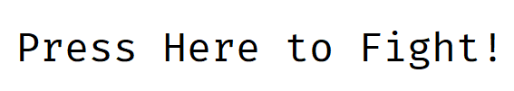

使用A/W/S/D 左移/前进/后退/右移，按下鼠标左键进行攻击，左Shift键进行短暂冲刺

这是2108班2021K8009926027 陈玄烨自己制作的小小小游戏，虽然花了一个学期(然而前半学期进度极其缓慢)来制作但是仍然十分粗糙，体量依然很小
恶趣味也许来自本人的胡思乱想，也许来自群友们的启发，总之我觉得恶趣味也不算多？
如果要问为什么这个游戏模型这么丑，判定这么有问题，BOSS AI太蠢/太疯狗，技能太无脑，优化很差，光照效果很烂，阴影质量很差。。。
好吧，模型丑是因为我不会3D建模，所有模型都是一个个坐标硬编码进去的......
问题太多啦，总而言之，不是时间精力不够就是本人技术力不足，早知道做个2D游戏就没这么多破事儿了(恼
我自己测试用的显卡是RTX3060跑得很流畅，我对这个游戏渲染运算量也没啥把握，如果你玩起来掉帧严重请随意痛骂开发者的代码优化水平(
最后的最后，源代码我自己也觉得写得很难看。如果你觉得写得丑看不懂请务必痛骂开发者编程技艺欠佳(
感谢GAMES104的群友们对我开发过程中遇到的技术问题的耐心指导
感谢中国人民大学的兄弟提供的一张贴图(经过本人二次创作)
感谢2001邱瑞晨抠图提供的素材
封面图:Dark Souls Ⅲ宣传图，经调色和P图后完成
gl-Matrix:经过自己删改，重写大部分代码完成，保留了原库中少数几个函数，并根据需要增加了部分新功能
特效:ring，经过二次创作完成
用于表面的贴图:由中国人民大学的同学完成，经过二次加工
天空盒:skybox
子弹的贴图:由2001邱瑞晨提供，经过二次加工
地板纹理:floor经过二次加工
法线贴图:NormalMap
BGM:来自NieR:Automata, 双極ノ悪夢